舉辦期間限定活動「見參！ 拉斯維加斯御前試合～泳裝劍豪七色勝負！」！
在觀測到微小特異點的北美大陸西部拉斯維加斯之地，賭上泳裝劍豪最強之座展開決鬥！
本活動中進行主線關卡的話，活動限定從者「★4(SR)葛飾北齋(Saber)」會以期間限定加入。
更推進主線關卡，讓「★4(SR)葛飾北齋(Saber)」正式加入吧！
※本頁面皆為開發中圖片。會有與實際圖片相異的情況。 ※一部份的關卡為日後開放。
◆活動舉辦期間◆
2019年8月14日(三) 17:00～9月4日(三) 11:59
◆活動參加條件◆
滿足以下條件的御主才能參加
・通過「特異點F 炎上汙染都市 冬木」
◆有關從者真名的注意◆
在2018年12月31日(二) 23:00以後新配信的主線故事及期間限定活動、一部份關卡、宣傳活動及召喚中，會顯示隱藏真名的對象從者真名。
※已經配信的主線故事、復刻活動、一部份關卡中不在此限。
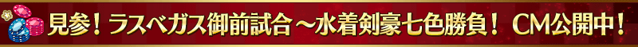
【8月14日(三) 17:00追記】
在「Fate/Grand Order」官方網站內首頁及Gallery，公開了期間限定活動「見參！ 拉斯維加斯御前試合～泳裝劍豪七色勝負！」的電視廣告。
敬請確認。
動畫製作：A-1 Pictures

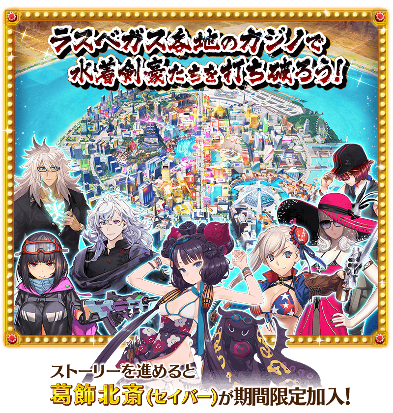
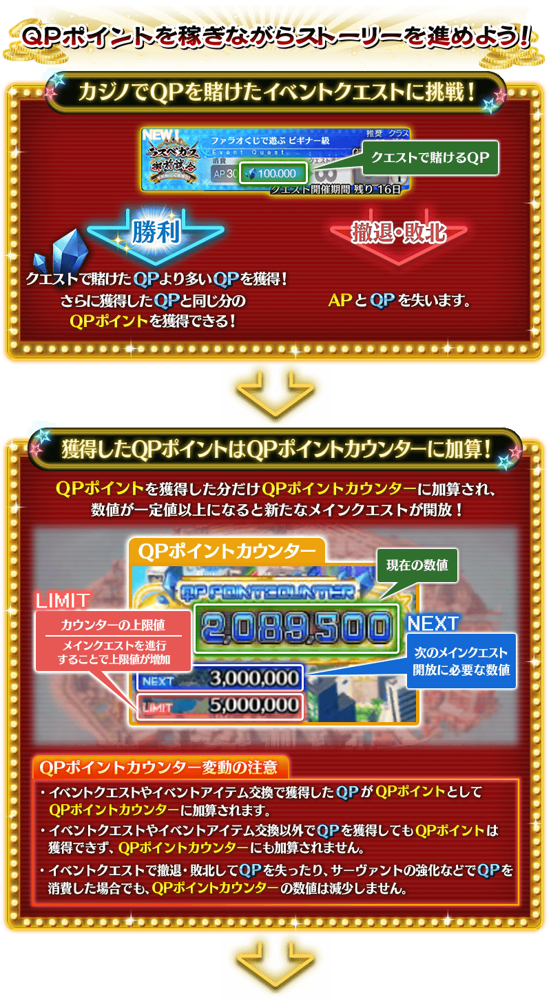
※8月14日(三) 圖片修正

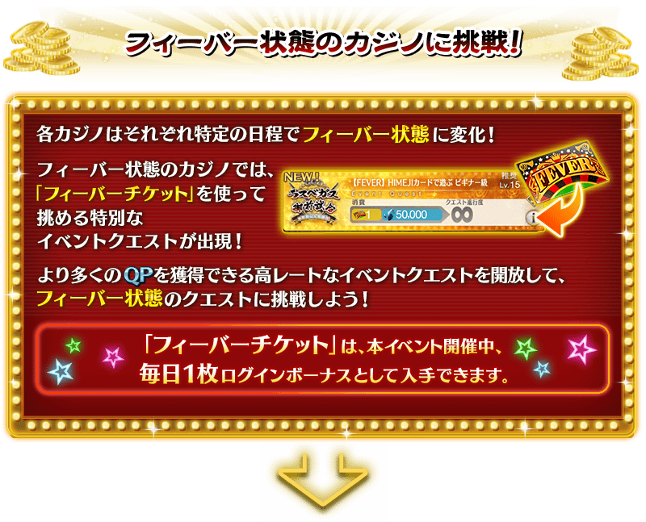
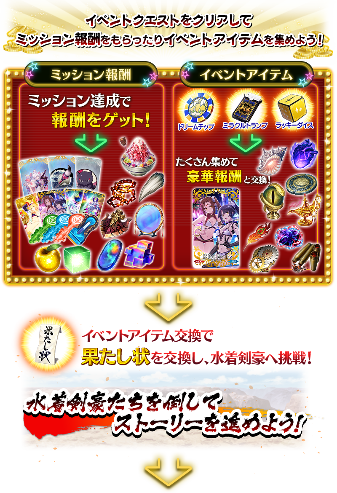
葛飾北齋為日後正式加入！
通過日後追加的主線關卡後，期間限定從者「★4(SR)葛飾北齋(Saber)」會正式加入。
◆葛飾北齋正式加入可能時間◆
2019年8月26日(一) 17:00～
※請注意於活動開始初期階段開放的主線關卡結束階段不會正式加入。
※領取FEVER券的登入獎勵，是在2019年8月14日(三)～9月4日(三)的期間，通過「特異點F 炎上汙染都市 冬木」的御主每天3:00(只有8月14日(三)17:00)領取。
※在2019年8月14日(三) 17:00以後通過「特異點F 炎上汙染都市 冬木」的情況，登入獎勵會從下個3:00領取。
※禮物箱的FEVER券領取期限為2019年9月4日(三) 11:59，在2019年9月11日(三) 12:00以後自動消失。
(延長領取期限。8月14日(三) 17:00修正)
享受劇情的主線關卡如下列行程表開放。
推進主線關卡的話，會開放收集活動道具的自由關卡。
之後的自由關卡，是靠通過主線關卡和自由關卡來開放。
【關卡的舉辦期間】
| 關卡 | 舉辦期間 |
|---|---|
| 開場～
主線關卡『第一賭場』 自由關卡 |
2019年8月14日(三) 17:00～ 9月4日(三) 11:59 |
| 主線關卡『第二賭場』 自由關卡 |
2019年8月16日(五) 17:00～ 9月4日(三) 11:59 |
| 主線關卡『第三賭場』 自由關卡 |
2019年8月18日(日) 17:00～ 9月4日(三) 11:59 |
| 主線關卡『?????』 自由關卡 |
2019年8月20日(二) 17:00～ 9月4日(三) 11:59 |
| 主線關卡『?????』 自由關卡 |
2019年8月22日(四) 17:00～ 9月4日(三) 11:59 |
| 主線關卡『?????』 自由關卡 |
2019年8月24日(六) 17:00～ 9月4日(三) 11:59 |
| 主線關卡『?????』 |
2019年8月26日(一) 17:00～ 9月4日(三) 11:59 |

期間限定活動「見參！ 拉斯維加斯御前試合～泳裝劍豪七色勝負！」的自由關卡中，會以低機率(25％)出現加成敵人。
裝備活動限定概念禮裝「天鬼姫」的話會讓加成敵人出現率上升，1張上升15%，在合計裝備5張的情況，出現率可到100％。

【8月14日(三) 17:00追記】
期間限定活動「見參！ 拉斯維加斯御前試合～泳裝劍豪七色勝負！」中，滿足特定條件的話變得能挑戰「大好機會關卡」。
「大好機會關卡」下注許多QP的高風險高回報關卡。由於通過的話可以獲得許多QP，靠好好培育的從者以初次通過為目標吧。
※「大好機會關卡」通過一次前可挑戰無數次，戰鬥中敗北或撤退會失去下注的QP。
【大好機會關卡的舉辦期間】
| 關卡 | 舉辦期間 |
|---|---|
| 大好機會關卡1 | 2019年8月14日(三) 17:00～ 9月4日(三) 11:59 |
| 大好機會關卡2 | 2019年8月18日(日) 17:00～ 9月4日(三) 11:59 |
| 大好機會關卡3 | 2019年8月22日(四) 17:00～ 9月4日(三) 11:59 |
| 大好機會關卡4 | 2019年8月26日(一) 17:00～ 9月4日(三) 11:59 |

期間限定活動「見參！ 拉斯維加斯御前試合～泳裝劍豪七色勝負！」中，會發生達成「QP點數累計一定以上」「擊倒特定的敵人」等各式各樣條件的話，可獲得豪華報酬的任務！
另外，對應任務的達成狀況會開放新的任務和主線關卡。
攻略任務，邊獲得達成報酬邊推進主線關卡吧！
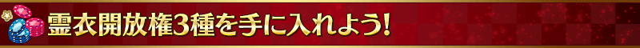
「★5(SSR)梅林」「★4(SR)齊格飛」「★3(R)風魔小太郎」的靈衣開放權在期間限定活動「見參！ 拉斯維加斯御前試合～泳裝劍豪七色勝負！」登場！
主線關卡中會出現可獲得靈衣的關卡，通過該關卡的話可得到靈衣開放權！
而且，靈衣開放權報酬的關卡只可在期間限定活動「見參！ 拉斯維加斯御前試合～泳裝劍豪七色勝負！」舉辦期間中挑戰。
想開放「★5(SSR)梅林」的靈衣「Camelot ＆ Co」「★4(SR)齊格飛」的靈衣「スーパー・クールビズ」「★3(R)風魔小太郎」的靈衣「夏休み満喫用忍び装束」靈衣的話，除了靈衣開放權外再加上必須滿足一些開放條件。
請注意未持有各靈衣開放權的對象從者的情況，還是能入手靈衣開放權，但無法進行靈衣開放。
關於詳情請在此處的公告確認。

【8月26日(一) 17:00追記】
以通過期間限定活動「見參！ 拉斯維加斯御前試合～泳裝劍豪七色勝負！」所有任務及「終局特異點」的御主做為對象，開放高難易度的挑戰關卡。
挑戰關卡就算通過後也不會消失，能無數次挑戰，可以變更從者和概念禮裝的組合後再次挑戰。 ※關卡通過報酬、戰利品、御主EXP、魔術禮裝EXP、絆點數只可在初次通過時獲得。
◆挑戰關卡開放時間◆
2019年8月26日(一) 17:00～
◆挑戰關卡參加條件◆
滿足以下條件的御主才能參加
・通過期間限定活動「見參！ 拉斯維加斯御前試合～泳裝劍豪七色勝負！」的所有任務
・通過「終局特異點」
◆挑戰關卡初次通過報酬◆
傳承結晶 1個
超值攻略方法・其1
本活動的期間中，強化「★4(SR)葛飾北齋(Saber)」時的獲得經驗值變成2倍。
是讓成為活動加成對象的「★4(SR)葛飾北齋(Saber)」等級一口氣上升的機會！
◆舉辦期間◆
2019年8月14日(三) 17:00～9月4日(三) 11:59
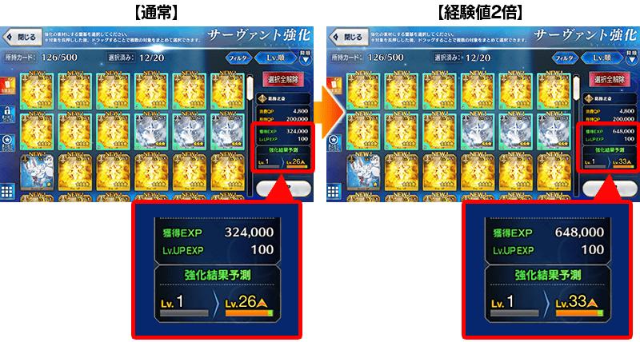
超值攻略方法・其2
本活動的期間中，下表的從者在活動關卡中會得到「自身的攻擊威力提升」與「絆點數獲得量提升」的加成！
強化對象從者，挑戰活動吧！
※活動加成的效果量因從者而異。
※瑪琇・基利艾拉特的「絆點數獲得量提升」效果，是所謂「我方全體含候補的絆點數獲得量提升」的效果。支援時此效果無效。
※自8月9日(五) 17:00，在從者選擇畫面和從者強化畫面等，追加「下次活動對象」篩選器。
由於是只顯示於活動活躍從者的便利功能，敬請活用。
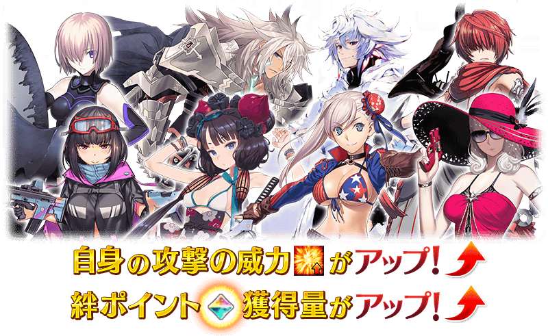
【活動加成的效果量與對象從者】
| 自身的 攻擊威力 |
絆點數 獲得量 |
職階 | 稀有度 | 從者名 |
|---|---|---|---|---|
| ＋100% | 只限自身 ＋50% |
Saber | ★★★★ | 葛飾北齋 |
| Berserker | ★★★★★ | 宮本武藏 | ||
| Ruler | ★★★★★ | 阿爾托莉亞・潘德拉剛 | ||
| ＋50% | 只限自身 ＋20% |
Saber | ★★★★ | 齊格飛 |
| Archer | ★★★★★ | 貞德 | ||
| ★★★★ | 刑部姬 | |||
| Lancer | ★★★★ | 謎之Alterego・Λ | ||
| Rider | ★★★★★ | 李奧納多・達文西 | ||
| ★★★★ | 卡米拉 | |||
| Caster | ★★★★★ | 梅林 | ||
| Assassin | ★★★★ | 沖田・J・總司 | ||
| ★★★★ | 尼托克里絲 | |||
| ★★★ | 風魔小太郎 | |||
| 我方全體 ＋5% |
Shielder | ★★★ | 瑪琇・基利艾拉特 | |
| ＋30% | 只限自身 ＋20% |
Saber | ★★★★ | 女王梅芙 |
| ★★★★ | 弗蘭肯斯坦 | |||
| Archer | ★★★★★ | 阿爾托莉亞・潘德拉剛 | ||
| ★★★★ | 安妮・伯妮＆瑪莉・瑞德 | |||
| ★★★★ | 海倫娜・布拉瓦茨基 | |||
| ★★★ | 羅賓漢 | |||
| Lancer | ★★★★★ | 玉藻前 | ||
| ★★★★ | 茨木童子 | |||
| ★★★★ | 清姬 | |||
| ★★★★ | 源賴光 | |||
| Rider | ★★★★★ | 阿爾托莉亞・潘德拉剛〔Alter〕 | ||
| ★★★★ | 伊絲塔 | |||
| ★★★★ | 莫德雷德 | |||
| Caster | ★★★★★ | 尼祿・克勞狄烏斯 | ||
| ★★★★ | 吉爾伽美什 | |||
| ★★★★ | 瑪莉・安東尼 | |||
| Assassin | ★★★★ | 牛若丸 | ||
| ★★★★ | 斯卡哈 | |||
| Berserker | ★★★★ | 織田信長 | ||
| ★★★★ | 貞德 〔Alter〕 |
|||
| Ruler | ★★★★ | 瑪爾大 | ||
| Avenger | ★★★★★ | 巖窟王 | ||
| Alterego | ★★★★ | Passionlip | ||
| MoonCancer | ★★★★★ | BB | ||
| Foreigner | ★★★★ | 謎之女主角XX |
※8月21日(三) 17:00更新
※就算成為對象從者，也會有不在本活動的主線劇情登場的情況。
超值攻略方法・其3
裝備活動限定概念禮裝會提升敵人的出現率和自身的攻擊威力！
裝備可靠活動任務報酬入手的活動限定概念禮裝「天鬼姫」的話，在關卡以低機率出現的加成敵人出現率會提升15％。
另外，裝備可靠活動道具交換入手的活動限定概念禮裝「盛夏の思い出」的話，在期間限定活動「見參！ 拉斯維加斯御前試合～泳裝劍豪七色勝負！」活動關卡中會提升自身的攻擊威力。
※請注意就算於各關卡的加成敵人出現率顯示100％以上的情況，實際的出現率仍是100％。
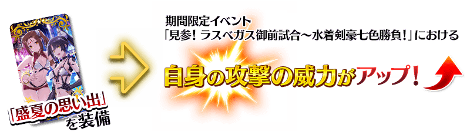
超值攻略方法・其4
裝備期間限定概念禮裝會提升活動道具的掉落獲得數！
裝備在聖晶石召喚Pick Up的期間限定概念禮裝「ウェルカム・バニー」「パープル・アイ」「夏の閻魔亭」「プールサイド・バー」「レディース＆ジェントルメン」「羊の數え歌」的話，會提升活動道具「美夢籌碼」「奇蹟撲克」「幸運骰子」各自的掉落獲得數。
※請注意各關卡的道具掉落率並非100％。
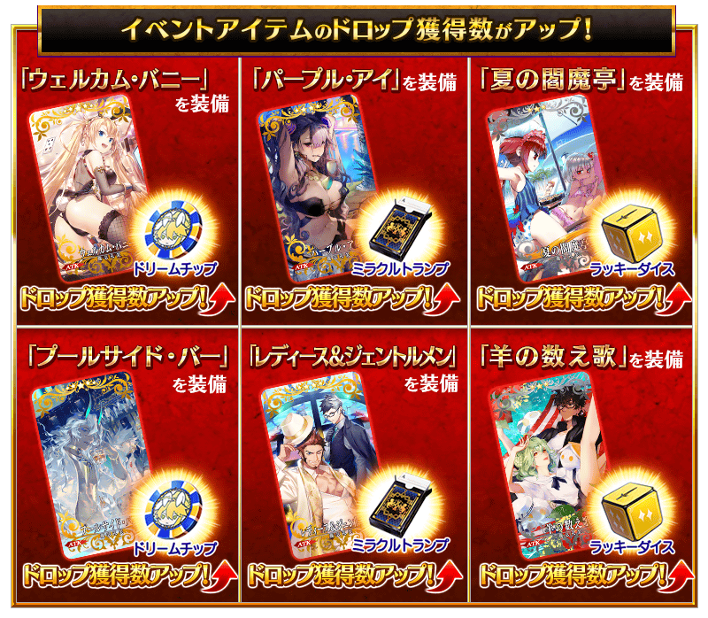
※8月16日(五) 20:00圖片修正
※期間限定概念禮裝「プールサイド・バー」「レディース＆ジェントルメン」「羊の數え歌」可在預定日後追加的聖晶石召喚入手。另外，從2019年8月18日(日)舉辦的期間限定「【週日限定】梅林Pick Up召喚」中也可先行入手這些期間限定概念禮裝。

|
★★★★★SSR
|


|
★★★★★SSR
|

| 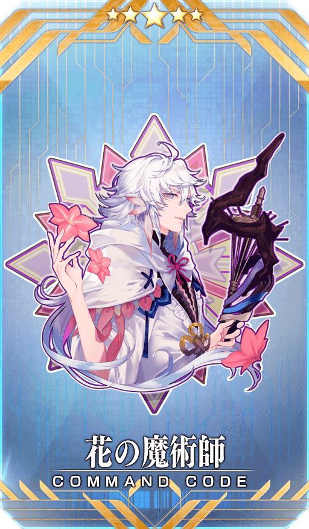 |
【活動限定】 |

|
★★★★SR |
| 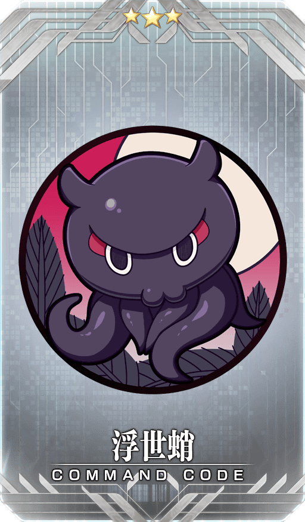 |
★★★R |

◆靈基再臨◆
使用能靠活動任務報酬入手的「富嶽三十六冰(ふがくさんじゅうろっぴょう)」，重複4次靈基再臨的話，卡面會有所變化！
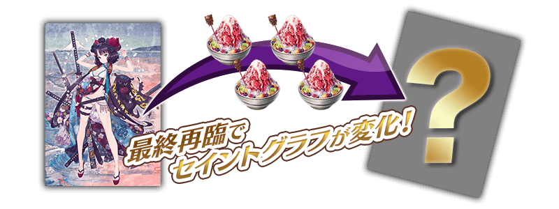
※「★4(SR)葛飾北齋(Saber)」不會隨靈基再臨使戰鬥角色的外觀變化。

【8月14日(三) 17:00追記】
介紹「★4(SR)葛飾北齋(Saber)」的寶具演出！
在「Fate/Grand Order」官方網站內的公告中，以影片公開寶具演出，敬請確認。

活動道具可自點擊管理室(ターミナル)畫面右上「活動報酬」鍵所顯示的「活動道具交換」畫面，交換以下的道具。
※關於英靈結晶・流星之芙芙ALL★4(HP)、英靈結晶・日輪之芙芙ALL★4(ATK)，在8月26日(一)開放的本活動進行後才能交換す。 ※活動道具交換期間結束後「美夢籌碼」「奇蹟撲克」「幸運骰子」會消失。 ※各種「決鬥書」會在活動結束後的2019年9月4日(三) 11:59消失。
◆交換期間◆
2019年8月14日(三) 17:00～9月11日(三) 11:59
◆能用美夢籌碼交換的道具◆
 |
【活動限定概念禮裝】 【活動關鍵道具】 【技能強化＆靈基再臨素材】 【靈基再臨素材】 【其他道具】 |
◆能用奇蹟撲克交換的道具◆
| 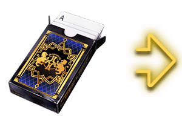 |
【活動限定概念禮裝】 【活動關鍵道具】 【技能強化＆靈基再臨素材】 【靈基再臨素材】 【其他道具】 |
◆能用幸運骰子交換的道具◆
|
【活動限定概念禮裝】 【活動關鍵道具】 【技能強化＆靈基再臨素材】 【其他道具】 |
翻新「★5(SSR)梅林」「★3(R)風魔小太郎」的戰鬥動作及寶具演出！
在「Fate/Grand Order」官方網站內的公告中，以影片公開寶具演出，敬請確認。(※8月14日(三) 17:00追記)
◆翻新實施時間◆
2019年8月14日(三) 17:00～
【梅林】
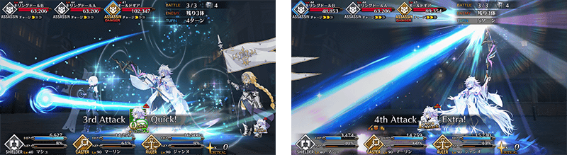
※8月14日(三) 17:00追加
【風魔小太郎】
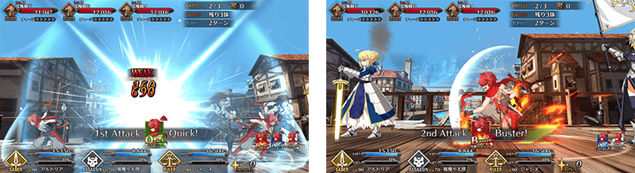
※8月14日(三) 17:00追加
在2019年8月14日(三)的遊戲更新後反映的更新內容之中，介紹代表性的內容。
◆追加時間◆
2019年8月14日(三) 17:00～
戰鬥速度的倍速設定修改為也適用在戰鬥結算
戰鬥結算(戰鬥結束後的BATTLE FINISH顯示、與從者的絆、獲得EXP、獲得戰利品的各畫面)中變得也適用倍速設定。
在戰鬥中讓戰鬥速度倍速的話也會讓戰鬥結算的演出變倍速。
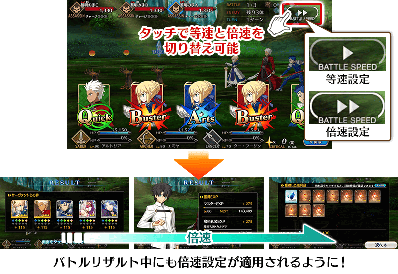
可長按概念禮裝圖示移動到詳細畫面的地方擴張
除了支援選擇畫面以外，在下述畫面長按在其他玩家從者裝備的概念禮裝圖示後，變得也可移動到概念禮裝詳細畫面。
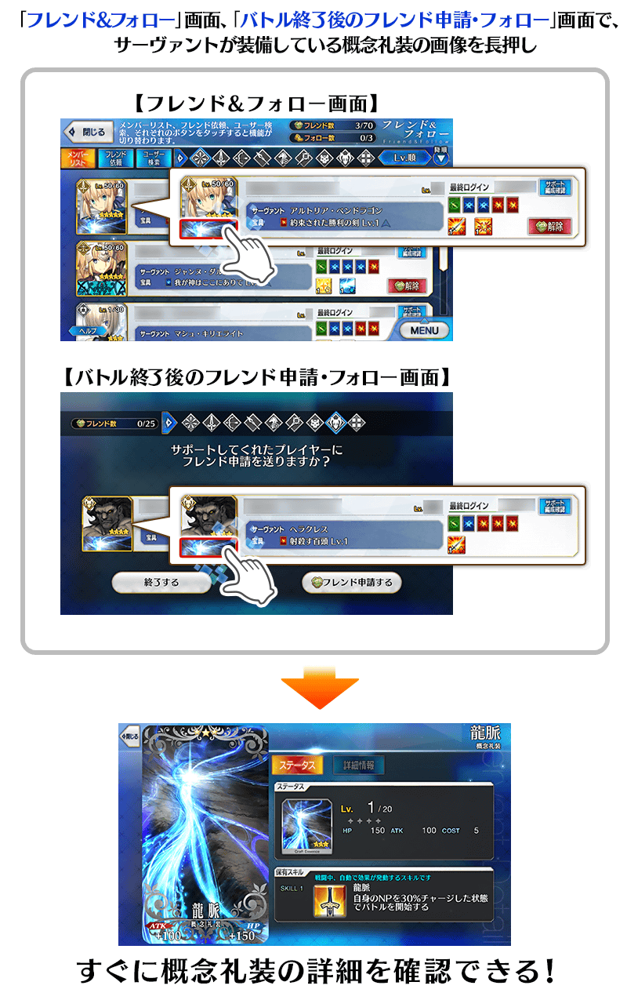
※開發中畫面。
在個人空間(マイルーム)容易聽到「一次也沒聽過的語音」改善
在登錄中意從者有「一次也沒聽過的語音」的情況，在個人空間(マイルーム)點擊從者時會優先聽到變得「一次也沒聽過的語音」。
其他還有，期間限定「拉斯維加斯御前試合Pick Up1召喚(每日交替)」和期間限定「【週日限定】梅林Pick Up召喚」同時舉辦！
關於詳情，請自下述橫幅確認。
■「拉斯維加斯御前試合Pick Up1召喚(每日交替)」詳細情報
■「【週日限定】梅林Pick Up召喚」詳細情報 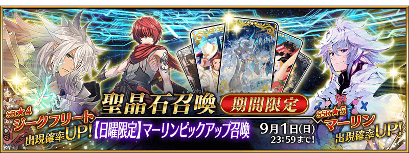※8月16日(五) 20:00圖片修正